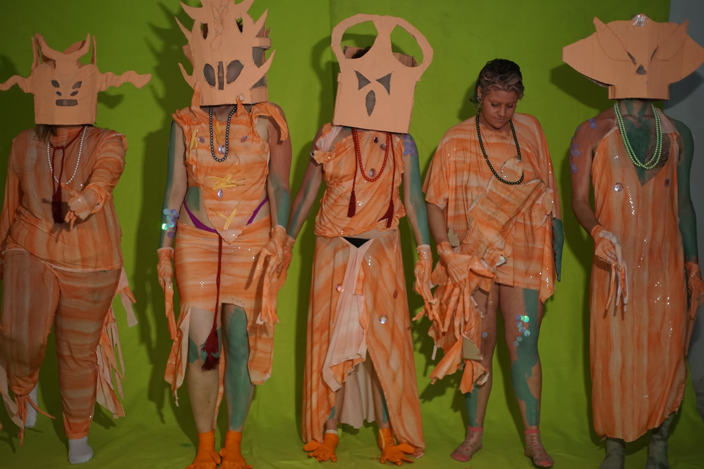
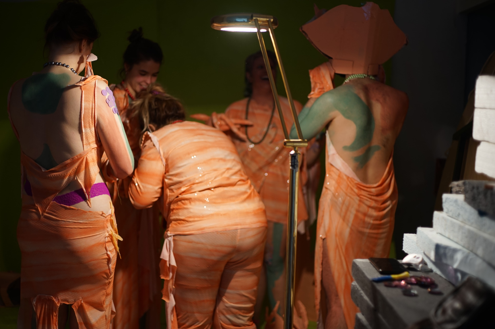
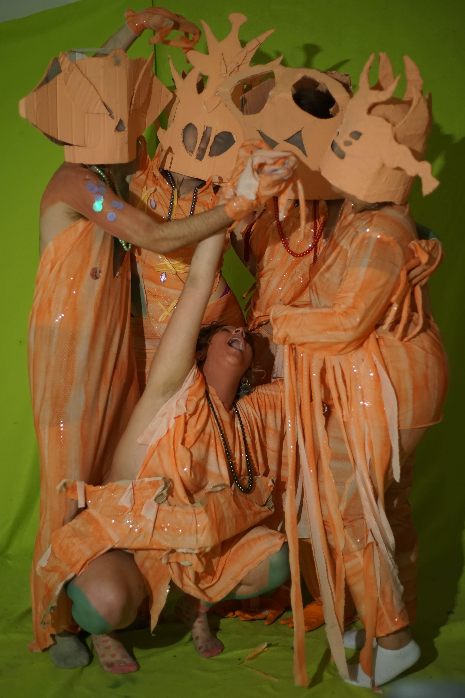
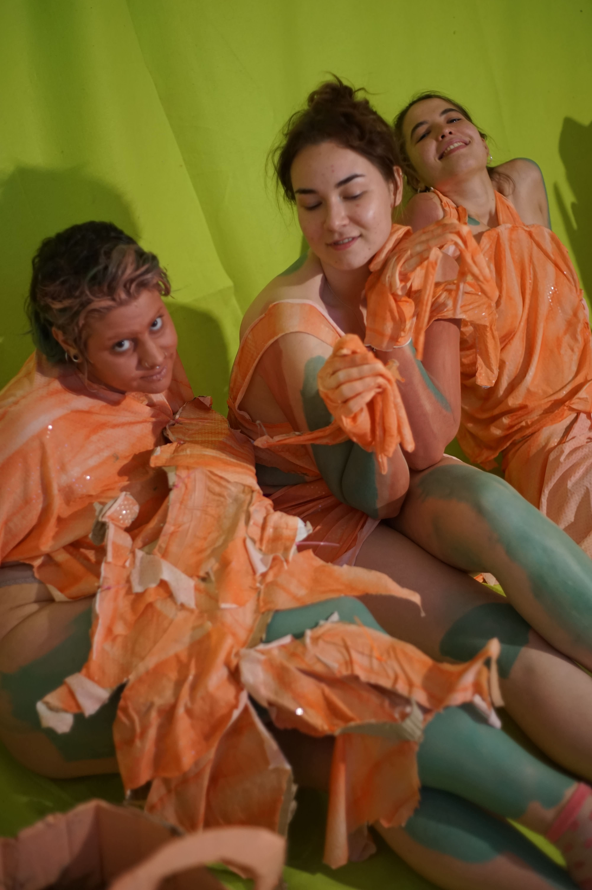
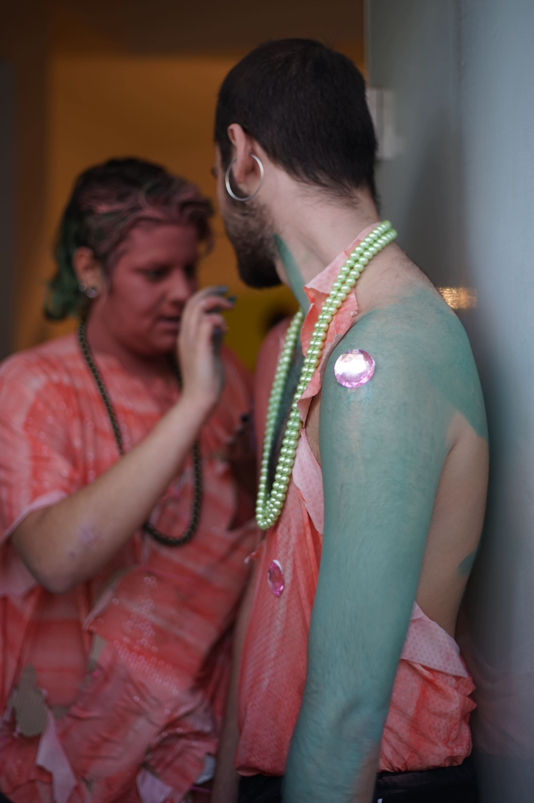
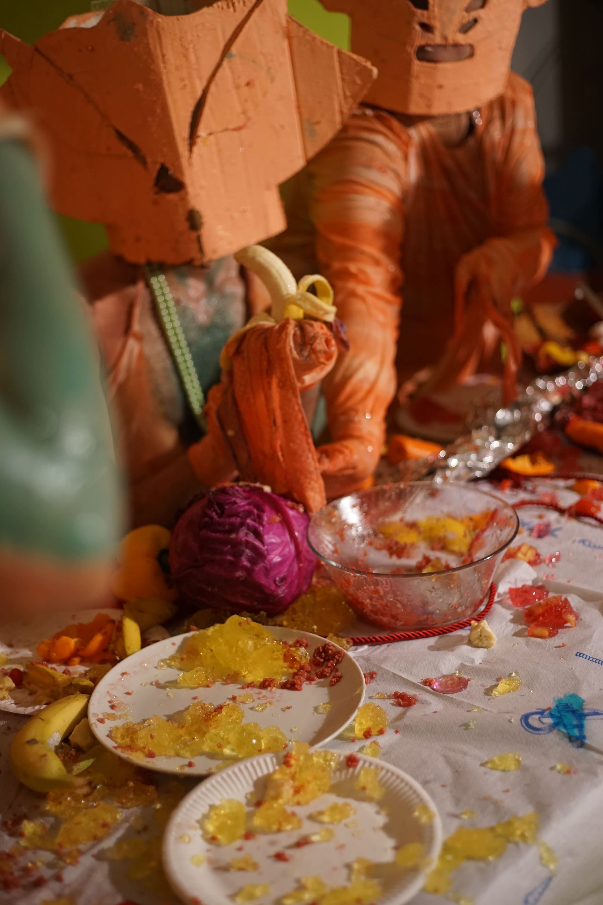
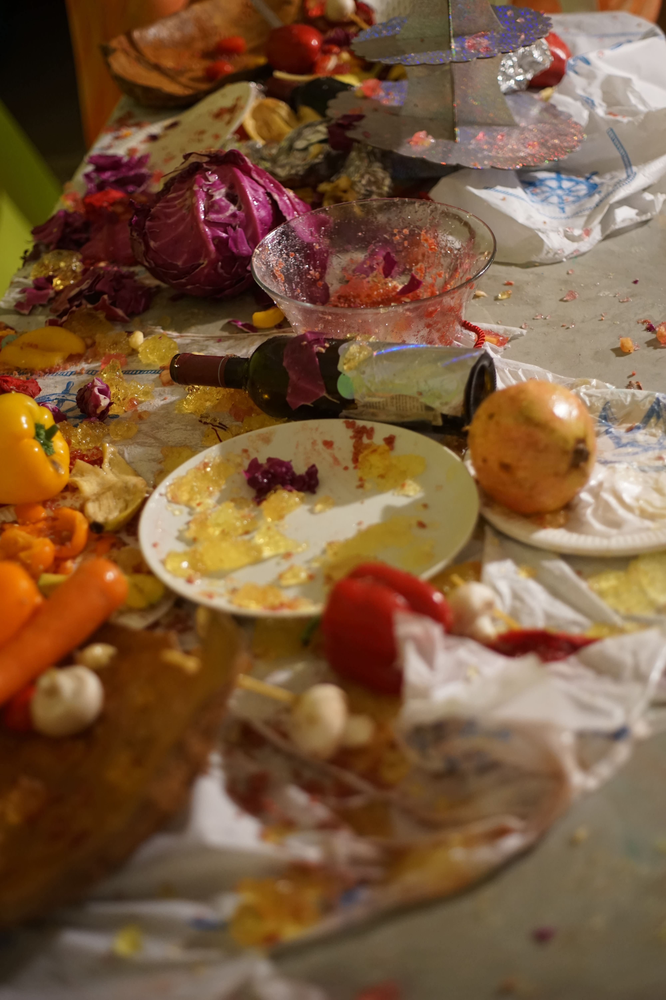
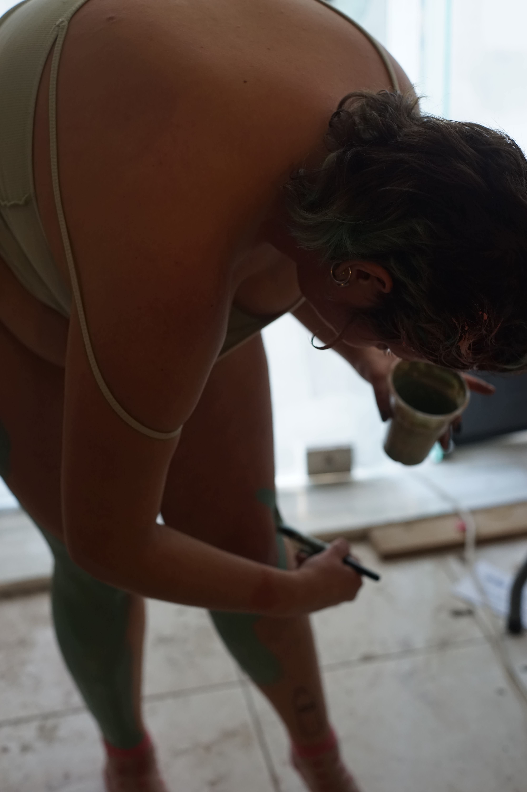

Kin Feasting | Multimedia-Performance
One Minute Space (Athens, GR)
Nov. 2021
Description: the relationship between humans and themselves, from earth to cosmic space. People have infinite imagination about the universe's species and the universe itself. Would they express their thoughts and emotions like we (humans) do? Questions like this become more and more attractive. and Those imagination only become more interesting by the blur concepts and our strong desire to know more about it. Surely today's scientists already had lots of evidence-based research on the universe and cosmic species and planets, but methodology is very different from the method of art. Perhaps we can go back to the original beginning of humans and would have a question about what was it before they became human? And what is the symbolic event to make humans become human? Maybe it is languages, to start to use fire or start to feel the emotion by themselves. I assume that all those could be subjected to the origin of human art. The process and consequences of humans are both very interesting and worth discussing, and we want to present this by our comprehension.
Humans are becoming more and more robotic with the development of the technology of this world, and forgetting to sense or feel things around them, living like empty souls inside of their shell. Capitalism plays a very important role in our concept, humans working all day long to produce things and they use the money that they earn from working to buy things produced by themselves.
We intended to create a feast, which can somehow be assumed as a one-day festival which showcases some symbolic phenomenons together with the movement change of the alienated humans. Some lucky alienated humans have a special opportunity to experience themselves with rich emotions and feelings as their ancestors did hundreds years ago on that feast.
Starting with they ingest a red pill, which can be regarded as a bottom to trigger the start of this story, and the red moon starts to rise up. Continuing with this, they start to have stronger senses not only on gustation, vision, tactus, but also their mental aspects such as emotions, affection of family, friends, lovers. As it starts, they want to experience more and to build deeper connections by eating food crazily, eye contact, touching, kissing each other and so on. As the red moon goes higher, the delicate relationship between them is becoming stronger, closer and deeper. Until the red moon reaches the peak point, which is also the same time that those humans fulfill their souls and spirits contentedly. After that they start to calm themselves down, lying on the floor and falling into sleep. When the next day comes, they return to what they were at the beginning, alienated and robotic humans, the memories of the feast are forgotten as it should be.
Progress






Responsibility
Casting: Kapoglou Tanja, Varveri Tanya, Weronika Przysada, Karlotta Mix, Nikolas Pachtitis
Sound: Varveri Tanya
Storyboard: Kapoglou Tanja
Editing: Varveri Tanya, (Background pattern: Kapoglou Tanja, Gan Lu)
Shooting: Gan Lu
Installation: Kapoglou Tanja, Varveri Tanya, Gan Lu
Reference
1. Haraway, Donna Jeanne. The Companion Species Manifesto: Dogs, People, and Significant Otherness. Chicago, Ill. : Bristol :Prickly Paradigm; University Presses Marketing, 2003.
2. Kin Baby
3. Kubrick, Stanley, and Arthur C. Clarke. 2001: A Space Odyssey. United States: Metro-Goldwyn-Mayer Corp, 1968.
4. Klein, Allen, Robert Taicher, Alejandro Jodorowsky, Horacio Salinas, Ramona Saunders, Juan Ferrara, Adriana Page, Nicky Nichols, Ana . Sade, Héctor Ortega, Rafael Corkidi, Ronald Frangipane, Don Cherry, Federico Landeros, and Joanne Pottlitzer. Alexandro Jodorowsky's the Holy Mountain. 2007.